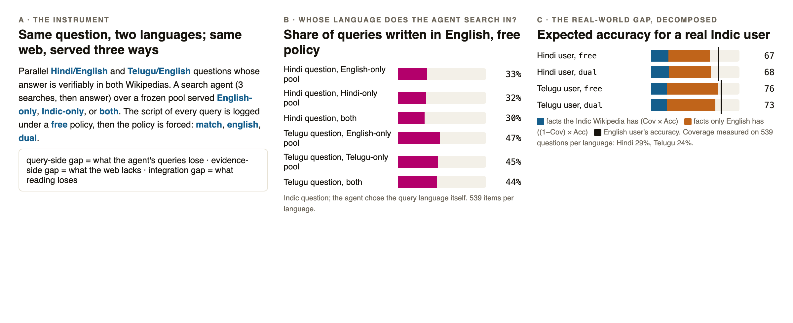
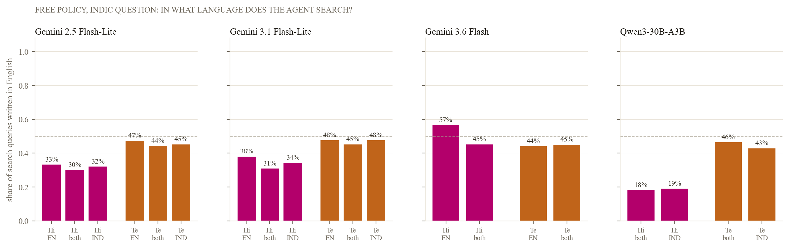
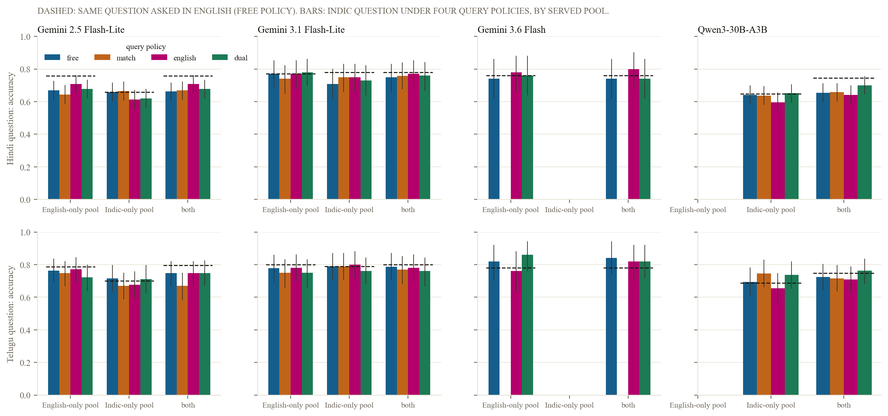
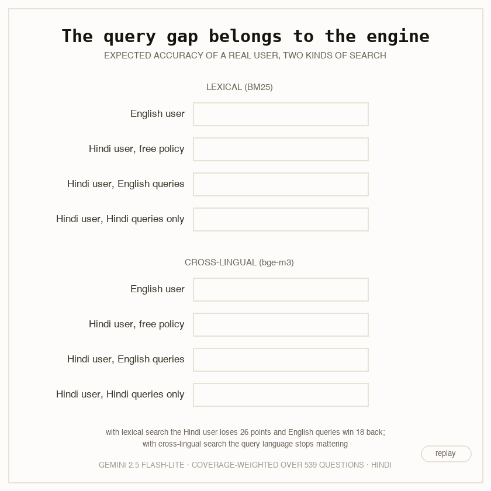
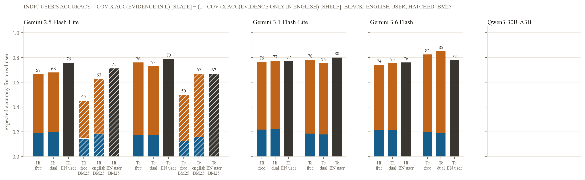
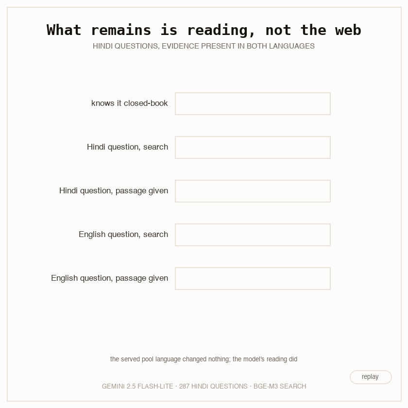
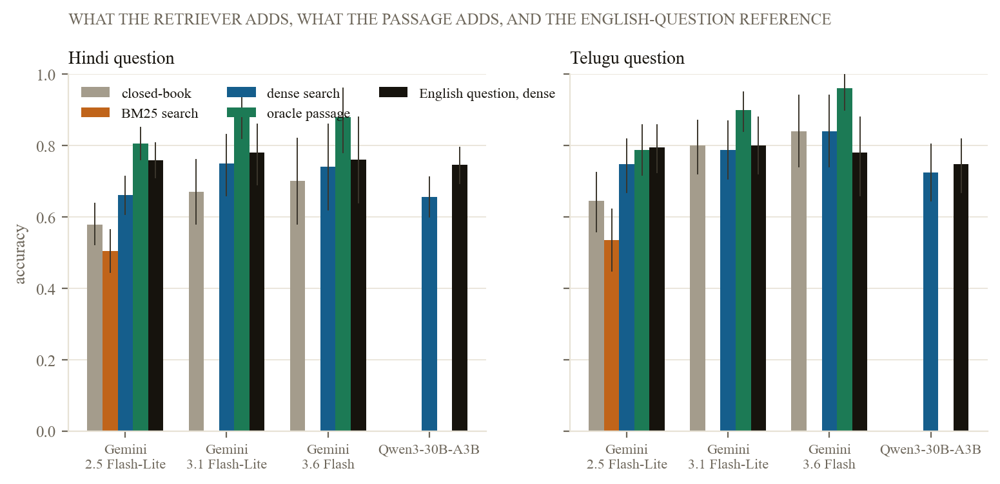

Search agents, a language model that writes queries, reads what comes back, and answers, are how hundreds of millions of people in India now reach the web through chat products. When the question is in Hindi or Telugu rather than English, the answer is wrong more often. Two different things can cause that. The agent may write a worse query, or write it in a language where the evidence is not: an English query for a fact only Hindi Wikipedia records, or a Hindi query for a fact only English Wikipedia records. We call that the query-side gap, and prompting or training can fix it. Or the fact may never have been written in the user's language. Hindi Wikipedia has 2.4% of the articles of English Wikipedia, Telugu 1.8%. That is the evidence-side gap, and only cross-lingual search or new content fixes it. A third residue remains when the right passage is in front of the model and it still answers worse in Hindi: the integration gap.
Nobody had separated these for a search agent. The closest study translates an English deep-research corpus into twelve languages with the question always in English and the agent's query language never observed; a Marathi study attributes failures by inspection with one language and no manipulation. We built the instrument that separates them.

Parallel questions. Human-translated Hindi/English and Telugu/English pairs from IndicGenBench XorQA-In, and natively parallel Hindi/English Wikipedia paragraphs from MLQA, kept only when the Indic Wikipedia article verifiably states the answer, so that the evidence exists in both languages by construction: 287 Hindi and 127 Telugu items. A natively written Telugu set (TyDi XOR, 120 items) checks that translated questions do not drive the behaviour.
A frozen two-language web. The complete Hindi Wikipedia (353,075 passages), the complete Telugu Wikipedia (518,524) and a 1.8% sample of English Wikipedia plus the full English article behind every item (1,065,485), all from the October 2026 snapshot. The agent has one tool, search(query), served from the English-only pool, the Indic-only pool, or both.
Two retrievers. bge-m3 dense embeddings (cross-lingual: a Hindi query finds English text) and BM25 keyword search (monolingual). With the question itself as the query, the gold passage is in the top five for 70% of Hindi questions under bge-m3 and 8% under BM25, because transliteration variants and Telugu case suffixes defeat exact tokens.
The query-language log and lever. A fixed ReAct loop: three searches at most, then a short answer. Under a free policy we log the script of every query; under match, english and dual the agent must query in the question's language, in English, or in both. Closed-book and oracle-passage arms bound the parametric and reading contributions. Four models: Gemini 2.5 Flash-Lite (every cell, both retrievers), Gemini 3.1 Flash-Lite, Gemini 3.6 Flash, and Qwen3-30B-A3B served on our own GPU.

Left free with a Hindi question, Gemini 2.5 Flash-Lite writes 30% of its queries in English, the two stronger Gemini models 31% and 45%, and Qwen 18%. With a Telugu question every model searches in English more often: 44% for Gemini 2.5 Flash-Lite. The share hardly moves with the pool served: an agent that gets no Hindi text back from an English-only pool does not switch language. The pre-registered prediction of a majority of English queries fails for all but one model on one pool.

With the evidence present in both languages, the Hindi question costs Gemini 2.5 Flash-Lite 9.4 points (66.2 vs 75.9, interval 4.5 to 14.3, survives correction) and Qwen3-30B-A3B 9.1 points. The two stronger Gemini models show no measurable gap (3.0 and 2.0 points, intervals through zero). Telugu gaps are smaller and not significant.
Where the gap exists, the lever does little. Matched-language queries: 0.7 points. Dual-language queries: 1.8. English-only queries: 4.5, not surviving correction. The gold passage was already in the top five for 79% of free-policy episodes. The served pool makes no difference either: the Hindi question on the English-only pool scores 66.9, on the Hindi-only pool 65.9, on both 66.2. The one place the policy matters is the pre-registered interaction: English queries beat matched queries by 6.3 points on the English-only pool and lose 4.9 on the Hindi-only pool (interaction 11.2 points, survives), for this model and Hindi only.

The same model and items under BM25: the Hindi question now costs 18.9 points, the Telugu question 11.0, and the Indic question with the keyword retriever sits 15.7 (Hindi) and 21.3 (Telugu) points below the same question with the dense retriever. Now the policy matters: dual queries recover 9.3 of the Hindi points (survives), and English-only queries on the English-only pool reach 62.7 against 43.4 under the free policy. Hindi-only queries on the Hindi-only pool collapse to 35.3. Under BM25 the agent abstains in 23% of episodes against 6% with dense retrieval. The query-side gap is a property of the search engine, not of the user.
For 539 XorQA questions per language we resolved the English source article to its Hindi or Telugu counterpart through Wikidata and checked whether that article states the answer: a string match, then two independent LLM reads of the full article that had to quote a sentence found verbatim, then a 50-item manual audit. The Hindi article exists for 67.5% of questions and states the answer for 29.1%; Telugu 52.5% and 23.6%. The audit found the first read too generous (2 of 30 acceptances wrong, 7 uncertain), which is why the second read was added; the figures are conservative.

Weighting the controlled cells by coverage gives the real-world decomposition. With cross-lingual search the evidence-side term vanishes, because the Hindi query finds the English passage: a Hindi user of Gemini 2.5 Flash-Lite can expect 66.7 against 75.8 for an English user, and the whole remaining gap is the agent's reading. With keyword search the Hindi user gets 45.4 against 71.4, the Telugu user 49.9 against 66.9, and most of that loss is the 71% of facts only English holds; telling the agent to search in English lifts the Hindi user to 62.9.


With the gold English passage in the prompt, Gemini 2.5 Flash-Lite answers the English question 86.8% of the time and the Hindi question 80.5% (gap 6.3, survives); given the Hindi passage instead, the Hindi question drops to 72.8%. The cheap model reads English evidence better than Hindi evidence even for a Hindi question. The stronger Gemini models read as well in Hindi as in English (integration gaps of -2.0 and -2.0 points). Closed-book, the models already know 58% to 70% of the Hindi answers, with closed-book gaps of 2 to 4 points; on the pre-specified subset Gemini 2.5 Flash-Lite got wrong closed-book in both languages (97 Hindi items) the gap is 12.5 points and dual queries recover 7.4.
| Direction (recorded before any grid call) | Result |
|---|---|
| D1 Agents write a majority of English queries for Indic questions; more for Telugu than Hindi | Fails on the majority (30–48%, one exception); holds on Telugu > Hindi for three of four models |
| D2 A query-side gap exists; dual queries recover at least half; English-only recovers less than dual | Gap exists for the two cheap models (9 points); dual recovers half for Qwen only; under BM25 dual recovers half for Gemini too; English-only recovers more, not less |
| D3 English queries help on the English-only pool and hurt on the Indic-only pool | Holds for Gemini 2.5 Flash-Lite, Hindi (11.2-point interaction, survives); absent elsewhere |
| D4 Coverage below one half, Hindi above Telugu; the coverage term exceeds the agent term for Telugu | First clause holds (29.1% vs 23.6%); second clause fails under cross-lingual retrieval and holds under BM25 |
| D5 The retriever carries the symmetric monolingual deficit: BM25 > dense > oracle | Holds: 35.3 > 10.1 > 6.3 points (Hindi), all survive |
| D6 With the oracle passage the Indic question is within 5 points of English | Holds for the two stronger Gemini models; fails by 1.3 points for Gemini 2.5 Flash-Lite |
Noise floor: 30 items re-run five times each at temperature 0 changed the verdict on 1 of 30 Hindi items and 0 of 30 Telugu items.
| Model | Hindi gap | Hindi: dual recovers | Hindi: both − English-only pool | Hindi: oracle gap | Telugu gap | Telugu: dual recovers |
|---|---|---|---|---|---|---|
| Gemini 2.5 Flash-Lite (full grid) | +9.4 [+4.5, +14.3] | +1.8 [-3.2, +6.8] | -0.7 [-5.2, +4.2] | +6.3 [+2.8, +9.8] | +4.7 [-1.6, +11.0] | -2.5 [-9.2, +4.2] |
| Gemini 3.1 Flash-Lite (100 items per language) | +3.0 [-2.0, +8.0] | +1.0 [-4.0, +6.0] | -2.0 [-7.0, +3.0] | -2.0 [-6.0, +2.0] | +1.0 [-5.1, +7.1] | -3.0 [-10.1, +3.0] |
| Gemini 3.6 Flash (50 items per language, headline cells) | +2.0 [-4.0, +10.0] | +0.0 [-6.0, +6.0] | +0.0 [-6.0, +6.0] | -2.0 [-10.0, +4.0] | -6.0 [-14.0, +0.0] | -2.0 [-8.0, +4.0] |
| Qwen3-30B-A3B (open weights, full grid) | +9.1 [+3.8, +14.6] | +4.5 [+0.7, +8.4] | +nan [+nan, +nan] | +nan [+nan, +nan] | +2.4 [-4.7, +9.4] | +3.9 [-0.8, +9.4] |
Percentage points with 95% item-bootstrap intervals; bold survives Benjamini–Hochberg over all 106 tests. Positive gap = the English question is answered more often.
That agents do worse on non-English tasks is known, and Hindi is among the weakest languages in every multilingual GAIA variant. That retrievers prefer English and query-language passages is known, and that the apparent preference is partly an artefact of where gold evidence lives was shown for single-shot RAG. That models write tool arguments in the wrong language is known. What is new is the agent's search-query language as a measured mediator and then a forced factor, parallel Indic/English questions over a pool whose evidence language is served or withheld, the retriever as a factor in the query-side gap, and a coverage term measured on the live Indic Wikipedias that turns the controlled cells into a statement about real users.
Find out which engine you have. With keyword search, translate the Indic query into English before searching; it recovers most of the loss, because most of the evidence is in English. With a cross-lingual dense engine, leave the query alone; the language of the query and of the pool no longer matter. Then look at the model. The residual Indic deficit is reading, not retrieval: the cheapest models answer a Hindi question several points worse with the same passage in front of them, and read Hindi passages worse than English ones; the stronger models do not. Do not expect the agent to adapt. Agents keep searching in the same mix of languages whatever the pool returns.
Wikipedia is not the web, and the English pool is a 1.8% sample plus the articles behind the items, so it has fewer near-topic distractors than a real engine returns. Two languages only. The XorQA questions are human translations; the natively written Telugu subset shows the same query-language behaviour but is a different, harder set of items. Coverage was estimated with string matching and two LLM reads with a 50-item audit; the figure is conservative. The closed-model arm is Gemini only because a workspace guardrail blocked other families during the study; the open-weight arm is one model. The judge is a Gemini model; the string rule decides 41% of answers and a 40-item audit agreed on all 40. No live-web arm was run.
The question bank with coverage flags and hashes, the corpus builder (the snapshot is public), the sitelink resolver, the coverage checks, both retrievers, the agent loop and every prompt, the grid runner, the judge, the single analysis script that produces every number on this page, the audited samples and the spend log are in the repository. Metered spend: $11.34 over 75,196 calls, plus about three GPU-hours on a rented A100 for the open-weight arm and the embeddings.